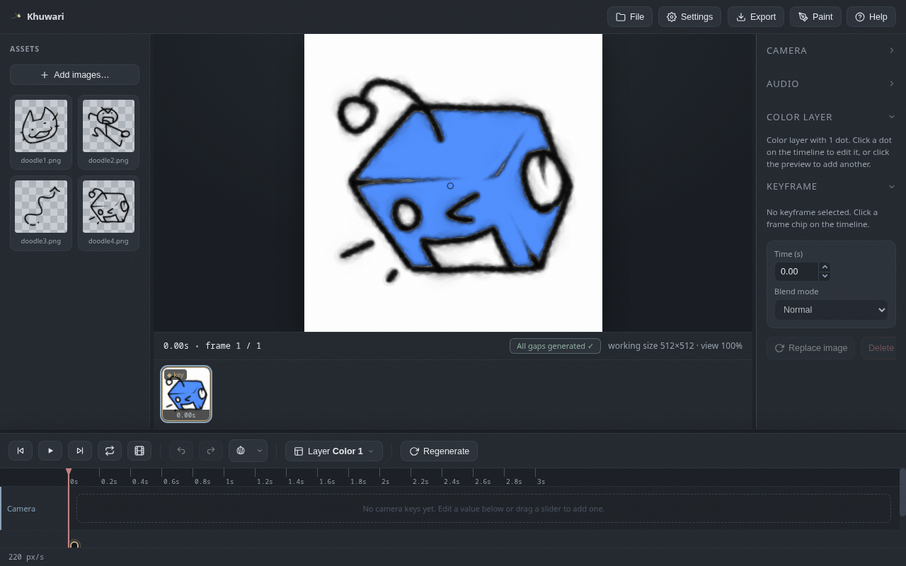

Color layers
Color dots that fill the layer above, with thresholds, grow, gradients and timing.
What they do
A color layer holds dots instead of keyframes. Each dot is a smart bucket fill for the layer above it: click, and the enclosed area inside the nearest lines fills with color, without touching the drawing.

Add one and place dots
- Use the
Layermenu and chooseAdd color layer. - Click on the canvas to place a dot.
- The dot fills everything inside the nearest lines of the layer above.
New dots remember the last color you used, so coloring many regions goes fast. You can also copy and paste a dot's properties onto other dots.
Dot properties
- Fill color is what the dot pours into the area.
- Threshold decides how strong a line must be to stop the fill.
- Grow is a radius in pixels that tucks the color under soft edges.
Gradients
Turn on Gradient to give a dot a gradient instead of a flat fill.
- Gradient color is the color the fill fades toward.
- Height controls how tall the gradient is.
- Direction picks top, bottom, left or right.
Timing
Dots only work during the time you set. Use the start and end fields in the right panel, or drag the dot chip on the timeline and drag its edges to resize. Outside that window the dot might as well not exist.